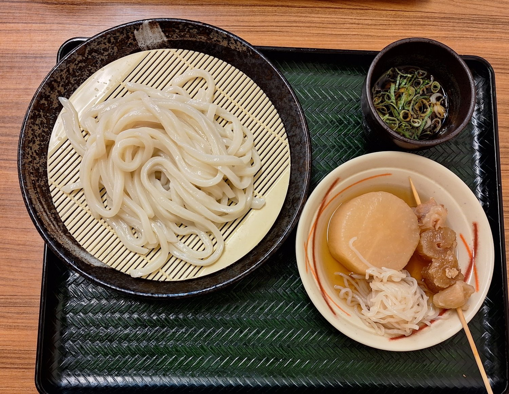
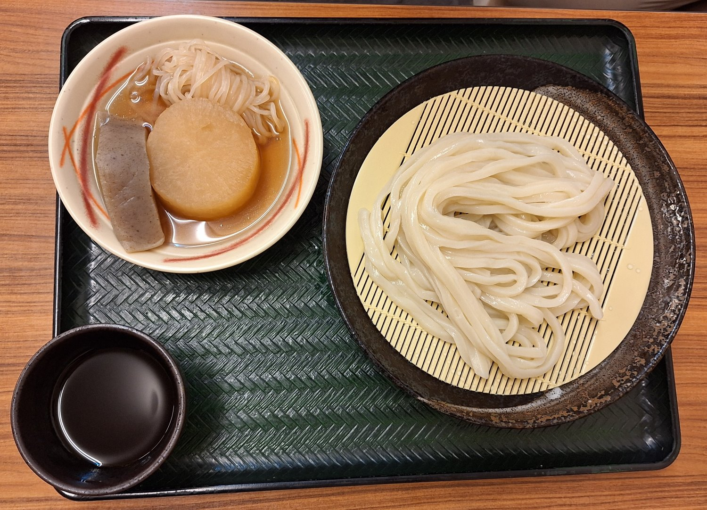
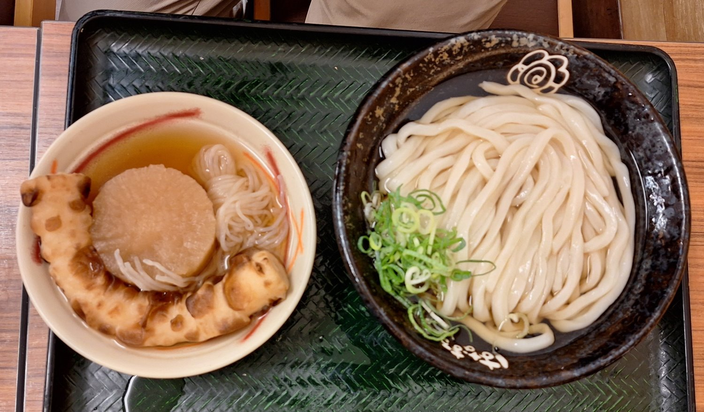
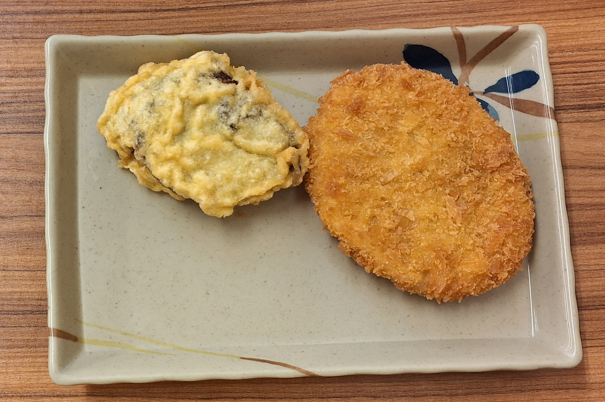

はなまるうどん 田町店 hanamaru udon 2025年9月15日 破魚 日本 香川, 美食, 烏龍麵 綜合評價：⭐⭐⭐⭐⭐  竹簍烏龍麵 (ざるうどん) 、關東煮  竹簍烏龍麵 (ざるうどん) 、關東煮  冷湯烏龍麵(冷かけ) 、關東煮  薩摩芋、可樂餅 這間店的麵條非常有咬勁且Q彈，醬汁鮮美帶甘甜，炸物酥脆不油膩，關東煮入味不死鹹，用餐環境非常乾淨寬闊，綜合比較之下是最出色的一間店。 店家資訊 店名： はなまるうどん 田町店 地址： 香川県高松市田町14-5 電話： 087-812-5512
留言板